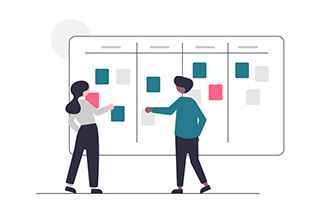

About

深川 和音
Kazune Fukagawa
Age:28
大阪市在住 (奈良県出身)
hobby: ドラム、音楽・映画鑑賞・自転車 etc...
-
Why?
〜なぜ目指すのか〜もっと成長したい、誰かの役に立ちたい、日々を楽しく過ごしたい、といった思いが強まり、Web制作業界への転職を目指しています。
Web業界は、日々技術や情報がアップデートされている点や制作によって達成感や充実感が得られる点に非常に魅力を感じ、またサイトを作ることで人の役に立ち、やりがいも強く感じて日々楽しく過ごすことができると考え、Web制作という仕事が自分に最も適していると強く感じました。 -
Vision
〜今後どうなりたいのか〜スピードは信頼に繋がるスキルの一つと考えており、まずはコーダーとして効率的なコーディング力を身につけ、スピード感のあるWebサイト制作やフロントの実装を目指します。
そしてデザインの知識も身につけ、よりUI・UXに富んだ使い勝手が良く斬新なあしらいを身につけます。
ゆくゆくはWeb制作に携わる者として、クライアント様やその先のユーザーの意図やニーズを汲み取り、または無意識に感じている欲を引っ張り出して、出来る限り100％に近い制作物を提供できるように精進します。
PR〜強 み〜
-
自己解決力と聞く力
活用していたスクールではすぐにメンターに聞かず、まず不明点をあらゆる方向から試すことを常に心がけて学習を進めていました。
ただしどうしてもわからないことは、諦めて周囲に確認することも心がけています。
「調べる・聞く」をバランスよく取り入れることで作業効率化を図っています。 -

チームワーク力
現職で部員同士で連携して業務を進めており、常に各部員の業務の進捗や予定などを把握し、自身の進捗の報告も心がけております。
また今まではスケジュール共有は紙面で行っていましたが、PC上で部員のスケジュールを共有するよう提案・導入し、現在ではよりリアルタイムに各部員の状況を把握できるようになりました。 -
好奇心・探究心
自己解決力に伴い、より一層粘り強さと好奇心も高めることができました。
最近は気になった言葉や仕組みなどは都度検索で調べ、また興味のあることは一度やってみて、「本当に自分はそれ好きなのか」を感じるようにしています。
Career〜経 歴〜
-
1992.8 奈良県にて誕生。毛がすごかったらしい。
-
1993.8 1歳
-
〜 省 略 〜
-
2015.3 四年生大学の商学部卒業。大学ではヒト・モノ・カネの流通や会社(法人)について学習し、当時各コンビニで登場し始めた「コンビニコーヒー」がなぜ売れているのかをテーマに卒業論文を執筆。軽音サークルにてドラムを担当。
-
2015.4 大阪の技術会社に入社、人事・総務系の部署に配属。主に勤怠管理を担当し、どうすれば残業が減るのか、有給休暇がとりやすくなるのかなどを調査。
-
2018.4 財務部に異動、主に売上・原価管理、債権管理・与信管理を担当。また基幹システムや文書管理システムの窓口担当者となり、各システムの不具合を開発会社に確認する「橋渡し」役となったことで、システム周りの知識を少しずつ吸収。
-
2019.11 システム窓口担当となったことでシステムやWebについて興味を持ち、また現在の業務や今後のキャリアビジョンに不安を抱き転職を検討。試しにWebサイト学習ツール「Progate」を触ったことで興味が爆発。Web制作、特にHTMLコーダーへの転職を決意し、オンラインスクール「Tech Academy」を受講。
-
2020.3 Tech Academy卒業後、転職エージェント登録により転職活動を開始。しかしエージェント主催の無料エンジアスクール(Java・PHP・インフラを学習)を勧められ、プログラミングにも興味があったことで試しに入校。
-
2020.7 エージェント主催のエンジニアルクール修了後、やはりWeb制作の方が好きだ、自分に合っていると実感し、再びWeb制作での転職活動を再開。
現在は主にコーディングの基礎や効率的な書き方、WordPress、デザイン関係を、書籍や動画教材を用いて独学で取組中。